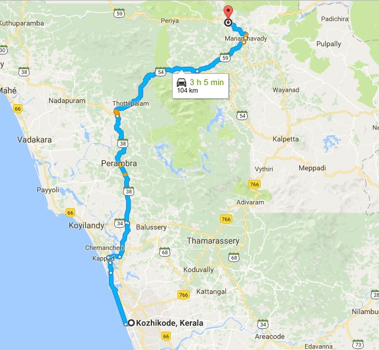

ADDRESS:
Government Engineering College,
Thalapuzha P.O,
Mananthavady,
Wayanad

Government Engineering College,
Thalapuzha P.O,
Mananthavady,
Wayanad
Govt.Engineering College, Wayanad is one of the 9 Government Colleges Under Directorate of Technical Education ( DTE ), Govt of Kerala.
The college was inaugurated in 1999 .The college is located 6 km from Mananthavady. It is 104 Km North- East of Calicut.
Prayer meeting:Dont have prayer meeting. Have contacts and there is a subregion team member from the college in last Two years.
How to reach:Catch Mananthavady Bus from KSRTC Bus stand and get down at Mananthavady. Catch Thalapuzha bus from there and get down at College stop.
Possibility:WIMS Can reach out to here and start new prayer meeting.